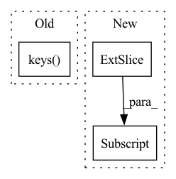

Pattern ID :26351
Before Change
def __getitem__(self, index):
file = self.file_list[index]
if isinstance(file, dict):
return {instrument: self.read_file_and_crop(file[instrument]) for instrument in file.keys() }
else:
return self.read_file_and_crop(file)
After Change
else:
b = np.random.randint(0, n - self.seq_len + 1) // [lo, hi[
e = b + self.seq_len
x = x[:, b:e]
// to pytroch tensor
x = torch.from_numpy(x)
In pattern: SUPERPATTERN
Frequency: 3
Non-data size: 3
Instances Fragment ID: 79129158
Project Name: wuaalb/pytorch_template_audio
Commit Name: c4139268ca0f749f4ec4c0a299d889225b89b003
Time: 2020-11-23
Author: mblaauw@gmail.com
File Name: dataset.py
M Class Name: WavDataset
N Class Name: WavDataset
M Method Name: __getitem__(2)
N Method Name: __getitem__(2)
M Parent Class: torch.utils.data.Dataset
N Parent Class: torch.utils.data.Dataset
M File Name: dataset.py
N File Name: dataset.py
M Start Line: 72
M End Line: 78
N Start Line: 50
N End Line: 85
Before Change
valid_flag = np.where(policy_batch["agent_index"] == a_id)[0]
next_action_one_agent = next_action[valid_flag, :]
all_agent_next_action.append(next_action_one_agent)
for key in other_agent_next_action_dict.keys() :
if key != a_id:
other_agent_next_action_dict[a_id].append(next_action_one_agent)
After Change
input_dict = {"obs": {}}
input_dict["obs"]["obs"] = next_obs
if global_state_flag:
input_dict["obs"]["obs"] = next_obs[:, :obs_dim]
input_dict["state"] = next_obs[:, obs_dim:]
state_in = policy_batch["state_in_0"]
seq_lens = policy_batch["seq_lens"] Fragment ID: 79129157
Project Name: replicable-marl/marllib
Commit Name: 0b1045a6d6bee61af1f416da898c1bc67c2355c9
Time: 2022-07-03
Author: hhhusiyi@163.com
File Name: marl/algos/utils/centralized_Q.py
M Class Name: AnonimousClass
N Class Name: AnonimousClass
M Method Name: before_learn_on_batch(3)
N Method Name: before_learn_on_batch(3)
M Parent Class:
N Parent Class:
M File Name: marl/algos/utils/centralized_Q.py
N File Name: marl/algos/utils/centralized_Q.py
M Start Line: 148
M End Line: 187
N Start Line: 154
N End Line: 192
Before Change
if relation_to_id is None:
if create_inverse_triples:
relation_to_id = create_relation_mapping(
set(relation_to_inverse.keys() ).union(set(relation_to_inverse.values())),
)
else:
relation_to_id = create_relation_mapping(unique_relations)After Change
// Generate relation mapping if necessary
if relation_to_id is None:
relation_to_id = create_relation_mapping(triples[:, 1] )
if compact_id:
relation_to_id = compact_mapping(mapping=relation_to_id)[0]
Fragment ID: 79129155
Project Name: pykeen/pykeen
Commit Name: a007a273ff146107fd1b0c099d561c7b7279965a
Time: 2020-12-10
Author: berrendorf@dbs.ifi.lmu.de
File Name: src/pykeen/triples/triples_factory.py
M Class Name: TriplesFactory
N Class Name: TriplesFactory
M Method Name: from_labeled_triples(7)
N Method Name: from_labeled_triples(6)
M Parent Class:
N Parent Class:
M File Name: src/pykeen/triples/triples_factory.py
N File Name: src/pykeen/triples/triples_factory.py
M Start Line: 169
M End Line: 222
N Start Line: 269
N End Line: 319